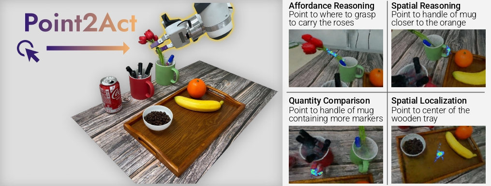
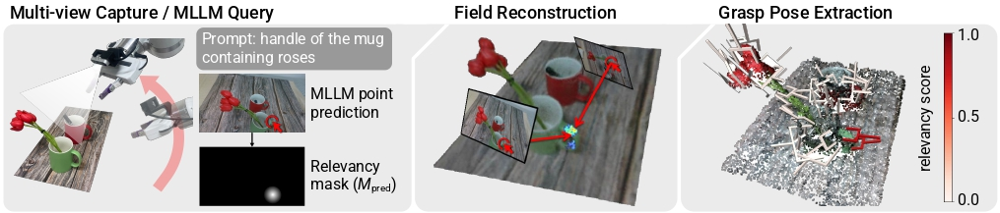
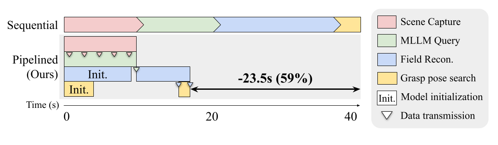

We propose Point2Act, which directly retrieves the 3D action point relevant for a contextually described task, leveraging Multimodal Large Language Models (MLLMs).
Foundation models opened the possibility for generalist robots that can perform a zero-shot task following natural language descriptions within an unseen environment.
While the semantics obtained from large-scale image and language datasets provide contextual understanding in 2D images, the rich yet nuanced features deduce blurry 2D regions and struggle to find precise 3D locations for actions.
Our proposed 3D relevancy fields bypass the high-dimensional features and instead efficiently imbue lightweight 2D point-level guidance tailored to the task-specific action.
The multi-view aggregation effectively compensates for misalignments due to geometric ambiguities, such as occlusion, or semantic uncertainties inherent in the language descriptions.
The output region is highly localized, reasoning fine-grained 3D spatial context that can directly transfer to an explicit position for physical action at the on-the-fly reconstruction of the scene.
Our full-stack pipeline, which includes capturing, MLLM querying, 3D reconstruction, and grasp pose extraction, generates spatially grounded responses in under 20 seconds, facilitating practical manipulation tasks.

We propose a novel framework that distills the knowledge of MLLMs into a 3D action point retrieval model, which we call Point2Act. The robot arm collects RGB images from the environment, while MLLM outputs points from the captured images and given natural language description of the task. We reconstruct 3D Relevancy Fields with NeRF, and the grasp pose extraction module identifies the optimal 6DoF grasping pose for the robot to interact with.

Instead of sequentially processing the entire pipeline, we propose a parallelized system that significantly reduces the execution time (~59%). The entire pipeline completes in ~ 16.5 seconds -from scene capture to grasp pose extraction-, demonstrating the practicality of Point2Act in real-world scenarios.
In human-robot handover scenarios, the robot must orient tools to keep hazardous parts away from the human. We use two natural language instructions: "Where should I hold this?" and "Which part is dangerous?". The robot identifies both safe grasping regions and hazardous parts, then adjusts the end-effector orientation to ensure the dangerous part faces away from the human.
Point2Act can identify both the graspable region and a safe placement area based on the scene context. We use two natural language instructions: "Where should I grasp to pick <*>?" and "The best region in the box, to place <*>."
@inproceedings{kim2026point2act,
title = {Point2Act: Efficient 3D Distillation of Multimodal LLMs for Zero-Shot Context-Aware Grasping},
author = {Kim, Sang Min and Heo, Hyeongjun and Kim, Junho and Lee, Yonghyeon and Kim, Young Min},
booktitle = {IEEE International Conference on Robotics and Automation (ICRA)},
year = {2026}
}